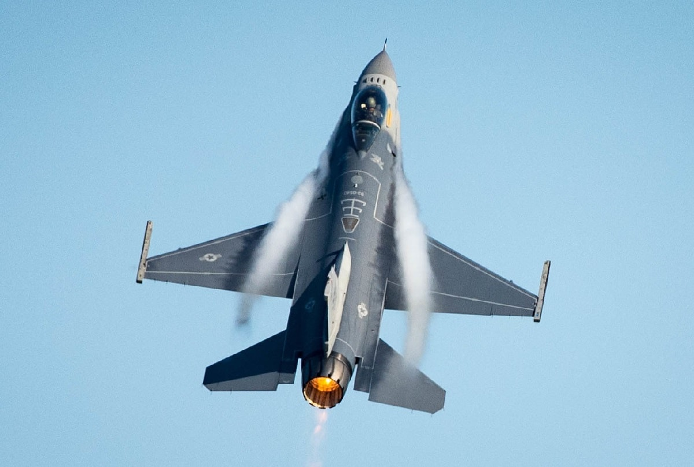
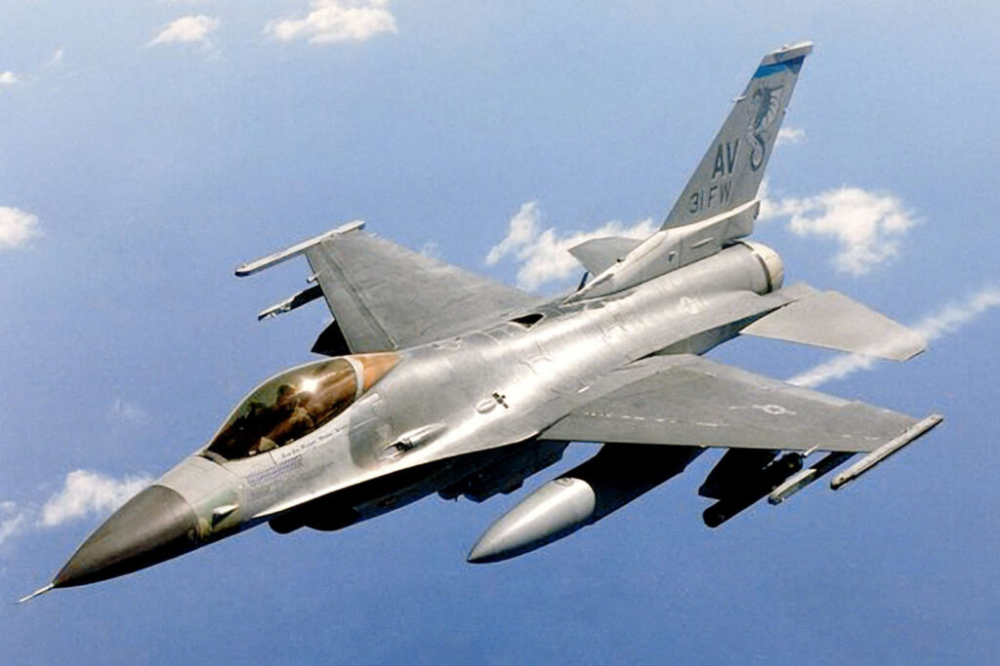
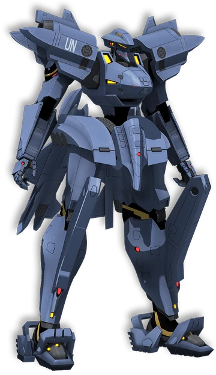

| F-16 Fighting Falcon | |
| Descrição | |
|---|---|
| Função: | Multi-Função |
| Local de Origem: | Estados Unidos |
| Fabricante: |
General Dynamics
Lockheed Corporation Lockheed Martin |
| Primeiro Voo: | 20 de Janeiro de 1974 (Não Planejado)
2 de Fevereiro de 1974 (Planejado) |
| Introduzido em: | 17 de Agosto de 1978 |
| Status: | Em Serviço |
| Utilziadores: | Bélgica
Bahrein Chile Coreia do Sul Dinamarca Emirados Árabes Unidos Egito Estados Unidos Grécia Países Baixos Indonésia Israel Itália Jordânia Marrocos Noruega Omã Paquistão Portugal Olónia Singapura Taiândia Taiwan Turquia Venezuela |
| Produzido: | 1973 a 2017, 2019 até Hoje |
| Caractersiticas Gerais (F-16C Block 50/52) | |
| Tripulação: | 1 |
| Comprimento: | 15.06m |
| Altura: | 4.9m |
| Envergadura das Asas: | 9.96m |
| Area das Asas: | 28m² |
| Peso Vazio: | 8.573kg |
| Peso Bruto: | 12,020kg |
| Peso Máximo de Decolagem: | 19,187kg |
| Capacidade de Combustivel: | 3.200kg Internamente |
| Performace | |
| Motores: | Block 50: 1 x General Eletric F110-GE-129 Turbofan Afeterburnig
Block 52: 1 x Pratt & Whitney F-100-PW-229 Turbofan Afeterburnig |
| Empuxo: |
|
| Velocidade Máxima: | March 2.05 ou 2.178km/h |
| Alcance: | Não Disponivel ai Publico |
| Alcance de Combate: | 546km |
| Armamento | |
| Armas: | 1 x Canhão Rotatorio de 20mm M61A1 Vulcan de 6 Barris com 511 Disparos |
| Hardpoint | 2 x nas pontas da asas, 6 sob a asa e 3 sob a fuselagem, com ao todo podendo carregar 7.700kg |
| Foguetes |
|
| Misseis |
Ar-Ar:
Ar-Terra:
|
| Bombas |
|
General Dynamics F-16 Fighting Falcon um caça americano de motor unico supersonic e de Multi- desenvolvido para a Força Aérea Americana, com o fium o F-16 começou a ter versões desevovlidas para exportação. E com o fim da compra do F-16 pela USAF, a parte de manufaturação no setor de aviação, foi vendidao para a Lockheed Corporation, que apôs 1995, a Lockheed Corporation e a Martin Marietta se fundiram e derão origem a Lockheed Martin. 
Um dos fatores do sucesso do F-16, é que em sue "Esquele"/Fuselagem, o seu cokpit posui o seu Dossel em formado de Bolha, garntindo uma boa visibilidade ao piloto, bem como o seu controle é colocado na parte lateral, com isso facilidano o controle. 
o F-16 embora seja um caça antigo, ele é um dos caças mais famosos em relação a compras, sendo até então tendo mais de 4.000 unidades vendidas. Ele também já apareceu em jogos com na franquia "Ace Combat" e em "Muv Luv". 
Sua aparição em "Muv Luv"